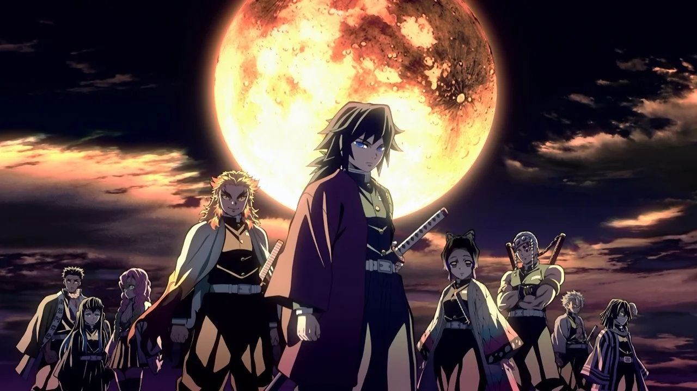
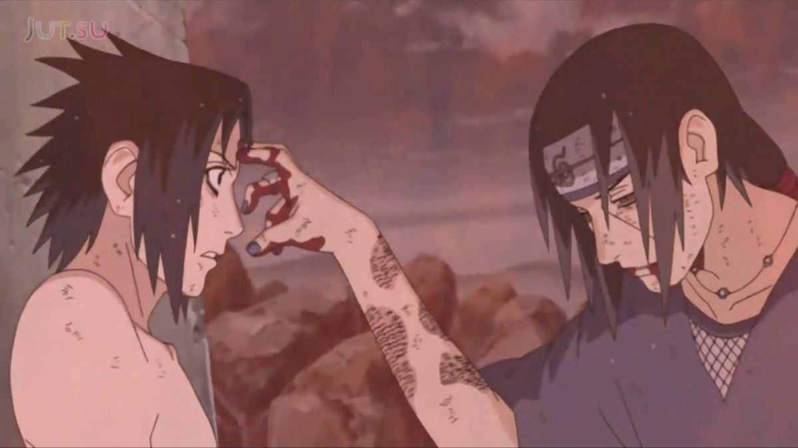

Anime
Género de animación de origen japonés que se caracteriza por un grafismo crudo y argumentos que frecuentemente tratan temas fantásticos o futuristas.

KIMETSU NO YAIBA: Pilares
Los Pilares son los nueve espadachines más poderosos entre los Cazadores de Demonios, liderados por Kagaya Ubuyashiki, siendo una parte vital del Cuerpo de Exterminio de Demonios. Cada uno posee un distinto tipo de estilo de respiración que fueron capaces de perfeccionar entrenando a muerte.

NARUTO: Itachi Uchiha
Itachi Uchiha es un ninja renegado considerado un prodigio y portador de numerosas cualidades sobresalientes. Es originario de Konoha, de la cual desertó, y miembro del Clan Uchiha, que fue exterminado por él.